Это сообщение в блоге - грубое приближение лекции, которую я дал на конференции AAG10 в Вене 21 сентября 2010 года. Естественно, это будет совсем другой опыт, так как среда совсем другая, но я надеюсь, что основная предпосылка лекции остается неповрежденной , Этот пост посвящен эволюционным решателям в целом, но я использую Rhino, Grasshopper и Galapagos для демонстрации тем.
24 сентября 2010
Дэвид Руттен
Эволюционные принципы, применяемые для решения проблем
с помощью
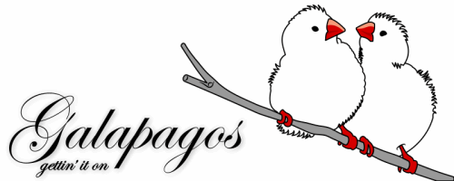
Нет ничего особенно нового в эволюционных решателях или генетических алгоритмах. Первые ссылки на эту область вычислений связаны с началом 60-х годов, когда Лоуренс Дж. Фогель опубликовал знаковый документ «Об организации интеллекта», который вызвал первые попытки эволюционных вычислений. В начале 70-х годов стали свидетелями дальнейших набегов с оригинальной работой, созданной другими - Инго Рехенбергом и Джоном Генри Холландом. Эволюционные вычисления не завоевали популярности за пределами мира программистов, пока книга Ричарда Докинса «Слепой часовщик» в 1986 году, в которой была небольшая программа, которая создавала, казалось бы, бесконечный поток планов тела под названием «Биоморфы» на основе отбора людей , Поскольку 80-
Термин «эволюционные вычисления» вполне может быть широко известен на данный момент времени, но они все еще очень полезны для программистов. «По программистам для программистов», если хотите. Приложения, которые применяют эволюционную логику, либо направлены на решение конкретных проблем, либо являются универсальными библиотеками, которые позволяют другим программистам комбинировать. Я надеюсь, что Galapagos предоставит общую платформу для применения Эволюционных алгоритмов, которые будут использоваться по широкому кругу проблем не программистами.
За и против
Прежде чем погрузиться в предмет слишком глубоко, хотя я считаю важным подчеркнуть некоторые из преимуществ этого конкретного типа решателя, просто чтобы вы знали, чего ожидать. Поскольку мы не живем в лучшем из всех возможных миров, часто нет такого понятия, как идеальное решение. У каждого подхода есть недостатки и ограничения. В случае эволюционных алгоритмов это, к счастью, хорошо известные и легко понятные недостатки, хотя они и не тривиальны. Действительно, они могут быть запретительными для многих конкретных проблем.
В первую очередь; Эволюционные алгоритмы медленны . Мертвые медленно. Нет ничего удивительного в том, что один процесс может работать в течение нескольких дней или даже недель. Особенно сложные настройки, требующие длительного времени для решения одной итерации, быстро выйдут из-под контроля. Например, световой / теневой или акустический расчет может потребовать минутку на итерацию. Если мы предположим, что нам понадобится как минимум 50 поколений по 50 человек каждый (что почти наверняка недооценивается, если проблема не имеет очень очевидного решения.) Мы уже рассматриваем двухдневную среду выполнения.
Во-вторых, эволюционные алгоритмы не гарантируют решения . Если не указано предопределенное «достаточно хорошее» значение, процесс будет работать бесконечно, никогда не дойдя до «Ответ» или, достигнув его, не признавая его за то, что он есть.
Однако все не мрачно и мрачно, но эволюционные алгоритмы также имеют сильные преимущества, некоторые из них довольно уникальны среди множества вычислительных методов. Например, они чрезвычайно гибкие , способные решать самые разнообразные проблемы. Существуют классы проблем, которые по определению недоступны даже для лучшей реализации решателя и других классов, которые очень трудно решить, но они, как правило, редко встречаются в провинции человеческого мезомира. В общем, проблемы, с которыми мы сталкиваемся ежедневно, попадают в категорию «эволюционно разрешимая».
Эволюционные алгоритмы также весьма прощающие . Они с удовольствием жуют проблемы, которые были недостаточно или слишком жестко сформулированы или плохо сформулированы. Кроме того, поскольку процесс выполнения является прогрессивным , промежуточные ответы могут собираться практически в любое время. В отличие от многих выделенных алгоритмов, Evolutionary Solvers вызывают бесконечный поток ответов, где более новые ответы обычно имеют более высокое качество, чем более старые ответы. Таким образом, даже досрочно прерванный запуск даст то, что можно назвать результатом. Это может быть не очень хороший результат, но это будет результат рода.
Наконец, эволюционные решения позволяют - в принципе - для высокой степени взаимодействия с пользователем. Это тоже довольно уникальная особенность, особенно учитывая широкий спектр возможных приложений. Процесс выполнения является очень прозрачным и доступным для просмотра, и существует много возможностей для диалога между алгоритмом и человеком. Решатель может тренироваться через барьеры с помощью человеческого интеллекта, или его можно использовать для изучения субоптимальных ветвей и поверхностных тупиков.
Процесс
В этом разделе я кратко опишу процесс выполнения эволюционного решения. Это очень упрощенная версия остальной части сообщения в блоге, и я пропущу многие интересные и даже важные детали. Я покажу этот процесс как ряд кадров изображений, где каждый кадр показывает состояние «популяции» в данный момент времени. Прежде чем я смогу начать, я должен объяснить, что означает изображение ниже.
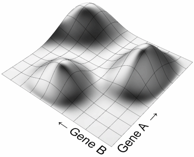
То, что вы видите здесь, - это фитнес-ландшафт конкретной модели. Модель содержит две переменные, что означает два значения, которые могут быть изменены. В Evolutionary Computing мы называем переменные как гены . Когда мы меняем Gene A , состояние модели меняется, и оно становится лучше или хуже (в зависимости от того, что мы ищем). Так как ген А меняется, фитнес всей модели идет вверх или вниз. Но для каждого значения А , мы можем варьировать Gene B , в результате чего лучше или хуже комбинаций A и B . Каждая комбинация А и В приводит к определенной физической форме, и эта пригодность выражается как высота Пейзажа пригодности.
Конечно, многие проблемы определяются не только двумя, но и многими генами, и в этом случае мы уже не можем говорить о «ландшафте» в строгом смысле слова. Модель с 12 генами была бы 12-мерным объемом тела, деформированным в 13 измерениях вместо двумерного фитнес-плана, деформированного в 3 измерения. Поскольку это невозможно визуализировать, я буду использовать только одну и двухмерные модели, но обратите внимание, что когда мы говорим о «ландшафте», это может означать что-то ужасно сложное, чем показано выше.
По мере того как решатель начинает, он не имеет представления о реальной форме ландшафта пригодности. Действительно, если бы мы знали форму, которую нам не нужно было бы беспокоиться со всем этим беспорядочным эволюционным материалом в первую очередь. Итак, начальный шаг решателя состоит в том, чтобы заполнить ландшафт (или «модель-пространство») случайным набором людей (или «геномов»). Геном - не что иное, как конкретное значение для каждого и каждого гена. В приведенном выше случае геном может быть, например, {A = 0,2 B = 0,5}. Затем решатель оценивает пригодность для каждого из этих случайных геномов, предоставляя нам следующее распределение:
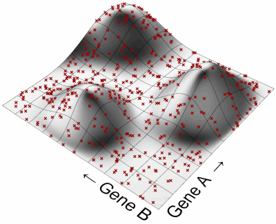
Как только мы узнаем, насколько подходит каждый геном (т. Е. Высота красных точек), мы можем сделать иерархию от наиболее приспособленной к максимальной. Мы ищем высоту в ландшафте, и разумно предположить, что более высокие геномы ближе к потенциальным землям, чем к низким. Поэтому мы можем убить самых худших из них и сосредоточиться на остальной части:
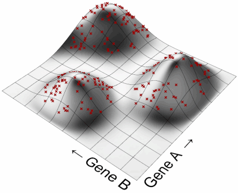
Это недостаточно для того, чтобы просто выбрать наиболее эффективный геном из первоначальной популяции и вызвать его выход. Так как все геномы в поколении 0 были выбраны случайным образом, на самом деле маловероятно, чтобы кто-то из них попал в гнездо. Что нам нужно сделать, так это размножение наиболее эффективных геномов в поколении 0, чтобы создать поколение 1. Когда мы разводим два генома, их потомство окажется где-то в промежуточной модели-пространстве, таким образом исследуя свежую почву:
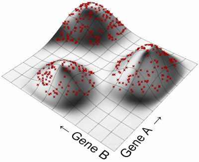
Теперь у нас появилось новое население, которое уже не является полностью случайным и уже начинает группироваться вокруг трех «пиков» фитнеса. Все, что нам нужно сделать, это повторить описанные выше шаги (убить самые плохие геномы, размножить наиболее эффективные геномы), пока мы не достигнем самого высокого пика.
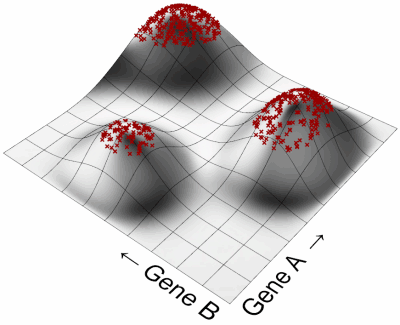
Чтобы выполнить этот процесс, Evolutionary Solver требует пять взаимосвязанных частей, о которых я расскажу в чем-то напоминающем детали. Мы могли бы назвать это анатомией Решателя.
Фитнес-функции
В биологической эволюции качество, известное как «Фитнес», на самом деле является чем-то вроде камнем преткновения. Обычно очень сложно точно сказать, что значит быть подходящим . Это, безусловно, имеет мало или ничего общего с тем, чтобы быть самым сильным, или самым быстрым, или самым порочным. Причина, по которой нет летающих собак, заключается не в том, что эволюция еще не дошла до того, чтобы сделать что-то еще, это то, что стиль жизни собаки в высшей степени несовместим с полетом, а жертвы, необходимые для экипировки собаки с полетом, наверняка отвлекут больше от общей Фитнес, чем полет. Фитнес - результат миллиона конфликтующих сил. Эволюционный фитнес - это конечный компромисс.
Подходящий человек в среднем способен производить больше потомства, чем непригодный, поэтому мы можем сказать, что фитнес равен числу генетических детей. Еще лучше было бы подсчитать количество внуков. И еще лучше было бы подсчитать частоту аллелей в генофонде генов, которые составляли индивидуум, о котором идет речь. Но это все довольно ad-hoc определения, которые нельзя измерить на месте.
По крайней мере, в Evolutionary Computation, фитнес - очень простая концепция. Фитнес - это то, что мы хотим . Мы пытаемся решить конкретную проблему, и поэтому мы знаем, что значит быть подходящим. Если, например, мы стремимся расположить фигуру так, чтобы ее можно было фрезеровать с минимальными материальными отходами, существует очень строгая функция фитнеса, которая не оставляет места для аргументации.
Давайте снова посмотрим на фитнес-ландшафт и предположим, что он представляет собой модель, которая стремится помещать объект в ограничительную рамку минимального объема. Минимальный ограничивающий прямоугольник - это самый маленький ортогональный блок, который полностью содержит любую заданную форму. На изображении ниже зеленая форма заключена в два ограничивающих прямоугольника. B имеет меньшую площадь, чем A, и поэтому является слесарем.
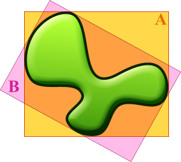
Когда нам нужно фрезеровать или 3D-печатать фигуру, часто рекомендуется поворачивать ее, пока она не потребует наименьшего количества материала, которое будет использоваться во время изготовления. Для реальной минимальной ограничивающей рамки нам нужны по крайней мере три оси вращения, но поскольку это не позволит мне отображать реальный ландшафт пригодности, мы ограничимся вращением вокруг осей X и Y в мире. Таким образом, Gene A будет представлять поворот вокруг оси X, а Gene Bбудет представлять поворот вокруг оси Y. Нет необходимости разрешать вращение выше 360 градусов, поэтому оба гена имеют ограниченный рабочий домен. (На самом деле, поскольку мы говорим о ортогональных коробках, достаточно даже домена 0-90 градусов). Смотрите вращение вокруг одной оси:
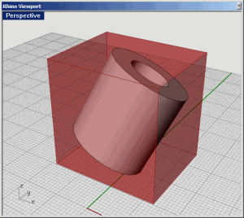
Когда мы выбираем два вращательных угла в случайном порядке, мы оказываемся где-то на фитнес-ландшафте. Если мы допустим 4 десятичных знака в углах поворота, это означает, что мы можем фактически генерировать почти 810 000 000 000 (или 810 миллиардов) уникальных вращений. Поэтому крайне маловероятно, что нам удастся выбрать случайное вращение, которое дает наилучший ответ. Но скажем, нам даже не удается приблизиться. Скажем, нам удастся выбрать случайный геном, который находится на плохом конце шкалы фитнеса, то есть в нижней части фитнес-ландшафта. Что мы можем сказать о линии крови этого генома? Когда мы отслеживаем потомков определенного генома, всегда существует большое количество случайности из-за работы Solver, но существует сильная общая тенденция, которую можно отличить.
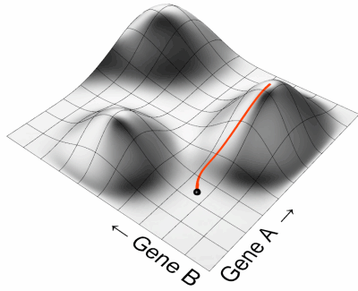
Каждый человек пытается максимизировать свою собственную пригодность, так как высокий фитнес вознаграждается решателем. И самый крутой подъем в гору - самый быстрый путь к высокой физической форме. Поэтому, если черная сфера представляет собой местоположение генома предков, оранжевая дорожка представляет собой путь ее самого успешного потомства. Мы можем повторить это упражнение для большого количества выборочных точек, которые расскажут нам о том, как взаимодействуют Solver и Fitness Landscape:
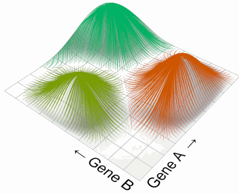
Поскольку каждый геном вытягивается в гору, каждый пик в фитнес-ландшафте имеет бассейн вокруг него. Этот бассейн представляет все точки в пространстве моделей, которые будут сходиться на этом конкретном пике. Важно отметить, что площадь бассейна никоим образом не отражает качество пика. Действительно, очень плохое решение может иметь большой бассейн притяжения, в то время как хороший пик может иметь небольшую зону водосбора. Такие проблемы, как правило, очень трудно решить, поскольку решение имеет тенденцию застревать в локальных оптимумах. Но позже мы рассмотрим проблемные функции фитнеса.
Во-первых, давайте более подробно рассмотрим фактический фитнес-ландшафт для нашей минимальной модели ограничительной коробки. Боюсь, это не так просто, как изображение, которое мы использовали до сих пор. На самом деле я был очень удивлен, как органичный и un-box-подобный реальный фитнес-ландшафт для этой проблемы. Помните, что вращение оси х отображаются вдоль гена направления и вращения по оси Y. вдоль гена B направления. Поэтому каждая точка на плоскости АВ представляет собой уникальный поворот, состоящий из двух углов. Высота этой точки является прямым отображением объема ограничительной рамки при этих двух углах поворота:
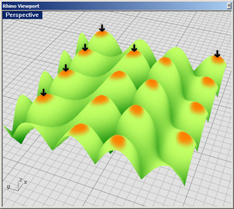
Первое, что нужно заметить, это периодичность пейзажа. То есть, он повторяется каждые 90 градусов в обоих направлениях. Кроме того, этот пейзаж фактически перевернут, поскольку мы ищем минимальныйобъем, а не максимальный. Таким образом, оранжевые пики фактически представляют собой худшие решения этой проблемы. Обратите внимание, что 16 из этих пиков во всем диапазоне и что они округлены. Когда мы смотрим на дно этого фитнес-ландшафта, мы получаем совсем другое мнение:
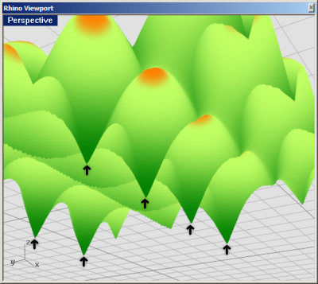
Похоже, что самые низкие точки в этом ландшафте (минимальные ограничивающие рамки) меньше по количеству и разному. Мы получаем только 8 оптимальных решений, и все они очень острые, что указывает на несколько более хрупкое состояние.
Тем не менее, в целом нам не на что жаловаться. Все решения имеют одинаковое качество, а локальных оптимумов вообще нет. Мы можем обобщить этот ландшафт на двумерный граф:
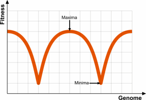
Независимо от того, где вы окажетесь в качестве генома предков, ваша линия крови всегда найдет свой путь к минимальной ограничивающей коробке. Нигде не нужно «застревать». Так что это действительно вопрос о том, кто первым попадает туда. Если мы посмотрим на несколько более сложный график пригодности, становится очевидным, что этого не должно быть:
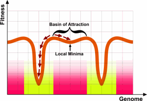
Этот фитнес-ландшафт имеет два вида решений. Высококачественные острые в нижней части графика и низкокачественные плоские сверху. Бассейн для аттракционов дается для обоих решений (желтый для высокого качества, розовый для низкого качества), и вы можете видеть, что около половины пространства модели привлекают решения низкого качества.
Еще худший пример (на этот раз снова поднялся вертикально, поэтому высокие значения указывают на хорошие решения) будет следующий фитнес-ландшафт:
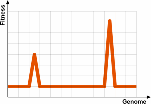
Бассейны для этих пиков очень малы и поэтому легко пропустить случайный выборка ландшафта. Как только счастливый геном обнаружит пик слева, его потомство быстро заполнит низкий пик, в результате чего остальная часть населения исчезнет. Сейчас еще менее вероятно, что будет найден лучший пик справа. Чем меньше бассейны для решения, тем сложнее решить проблему с эволюционным алгоритмом.
Другим примером громоздкой проблемы для решения было бы разрывный фитнес-ландшафт:
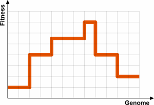
Несмотря на то, что, строго говоря, нет локальных оптимумов, на плато также нет «улучшения». Геном, который находится в середине одного из этих горизонтальных пятен, не знает, куда идти. Если он делает шаг влево, ничего не меняется. Если он делает шаг вправо, ничего не меняется. В этом фитнес-ландшафте нет «давления», поэтому все геномы будут блуждать бесцельно, пока один из них не повезет, чтобы внезапно перейти на более высокое плато. В этот момент он быстро доминирует в генофонде, и блуждание начинается снова до тех пор, пока не будет случайно обнаружено следующее плато.
Хуже того, это пейзаж, который имеет высокий уровень шума или хаоса. Ландшафт может быть непрерывным и все же содержать так много деталей, что становится невозможным делать какие-либо разумные произношения относительно пригодности локального патча:
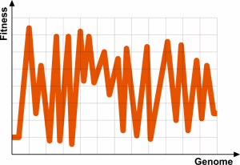
В подобном ландшафте мама и папа могут быть очень похожими, и оба они очень подходят, но когда они спариваются, потомство может оказаться в одной из трещин. Такой пейзаж не поддается навигации.
Механизмы отбора
Биологическая эволюция продолжается естественным отбором. Безжалостная сила, идентифицированная Дарвином как арбитр прогресса. Проще говоря, Natural Selection влияет на направление генофонда с течением времени, регулируя, кто получает спаривание. В крайних случаях спаривание предотвращается, потому что определенный геном настолько непригоден, что носитель не может выжить до репродуктивного возраста. Еще одним довольно экстремальным случаем было бы бесплодие. Тем не менее, существует множество способов, с помощью которых естественный отбор может затруднить или не дать определенным людям возможность пройти свой генетический след.
Тем не менее, Natural Selection - не единственная игра в городе. В течение длительного времени люди используют искусственный отбор, чтобы развить специфические характеристики в (суб) видах. Когда мы пытаемся решить проблемы с помощью Evolutionary Solver, мы всегда используем какую-то форму искусственного отбора. В компьютере нет такой вещи, как секс или пол. Процесс отбора также намного проще, чем в природе, так как в основном есть только один вопрос, на который нужно ответить: кто получает спать?
Позвольте мне перечислить механизмы выбора родителей, которые доступны на Галапагосских островах. Это лишь небольшое подмножество алгоритмов выбора, которые возможны, но, похоже, они довольно хорошо освещают основы.
Во-первых, у нас есть изотропный выбор , который является самым простым алгоритмом, который вы можете себе представить. Фактически, это отсутствие алгоритма выбора. В изотропном отборе каждый получает ответ:
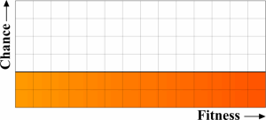
Независимо от того, где вы находите себя на этом графике фитнеса, ваши шансы попасть в пару спаривания постоянны. Вы можете подумать, что это особенно бессмысленная стратегия выбора, поскольку она не делает ничего, чтобы способствовать эволюции генофонда. Но это не без прецедента в природе. Возьмем, например, ветровое опыление или нерестование кораллов. Если вы сексуально действующий член такого вида, вы можете сыграть в походный сезон. Другим примером могли бы быть женщины в колонии моржей. Каждая женщина в колонии получает возможность размножаться с доминирующим мужчиной, независимо от того, насколько она подходит или непригодна. Изотропный выбор, конечно же, тоже не лишен функции. Во-первых, он уменьшает скорость, с которой население бежит в гору. Поэтому он действует как безопасная защита от преждевременной колонизации локального и, возможно, нижнего оптимального.
Еще один механизм, доступный на Галапагосских островах, - это эксклюзивный отбор , в который попадают только лучшие N% населения:
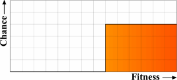
Если вам повезло оказаться в верхней N%, у вас, вероятно, будет несколько потомков. Хорошей аналогией в природе для Эксклюзивного отбора были бы самцы Моржа. Есть только несколько гаремов, чтобы обойти и слишком много мужчин, чтобы назначить их всех (гарем одной женщины в конце концов на самом деле не гарем). Лунки могут сидеть на боковой линии без единого шанса отцу мальчика-моржа, делая то, что делают моржи, когда они не могут получить никаких действий.
Другой характерной особенностью в природе является смещенный выбор, когда вероятность спаривания увеличивается по мере увеличения физической формы. Это то, что мы обычно видим с видами, которые образуют стабильные пары. Все в принципе способны найти помощника, но действительно привлекательным людям удастся получить большое количество hanky-panky на стороне, тем самым увеличивая их шансы стать генетическими основателями для будущих поколений. Смещенный выбор может быть усилен с помощью силовых функций, которые влияют на сглаживание или преувеличение кривой.
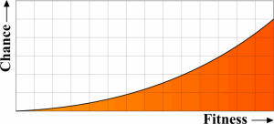
Алгоритмы сцепления
Сцепление - это процесс поиска помощников. После того, как геном был выбран для сопряжения с помощью активного алгоритма выбора, он должен выбрать помощника из популяции для завершения действия. Разумеется, существует много способов выбора мата, но Галапагос в данный момент допускает только один; Выбор по геномной дистанции. Чтобы подробно объяснить это, я должен сначала рассказать вам, как работает Карта геномов . Эта
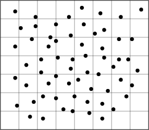
Это карта генома. Он отображает все геномы (отдельных лиц) в определенной популяции в виде точек на сетке. Расстояние между двумя геномами на сетке примерно аналогично расстоянию между геномами в геном-пространстве. Я говорю грубо, потому что на самом деле невозможно нарисовать карту с точными расстояниями. Один геном определяется рядом генов. Мы предполагаем, что все геномы у вида имеют одинаковое количество генов (это не является технически ограничением эволюционных алгоритмов, хотя в настоящее время это ограничение Галапагосских островов). Поэтому расстояние между двумя геномами - это N-мерное значение, где N равно числу генов. Невозможно точно отобразить облако точек с N-мерной областью на 2-мерном экране, чтобы карта геномов была только грубым приближением.
Представьте, что вы человек, выбранный для спаривания (yay). Население хорошо распределено, и вы где-то рядом со средним (я уверен, что вы дико оригинально и восхитительно в реальной жизни, но пока пытаетесь представить, что вы на самом деле являетесь средним показателем):
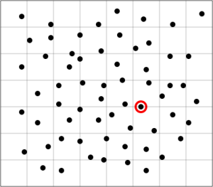
Эта красная точка - это ты. Кто выглядит привлекательно?
Конечно, вы могли бы ограничить поиск потенциальных партнеров в ближайшем окружении. Это означает, что вы спариваетесь с людьми, которые очень похожи на вас, и это означает, что ваше потомство также будет очень похоже на вас.
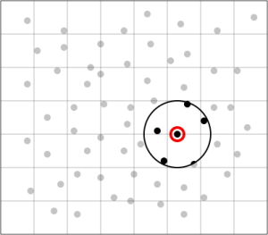
Когда это доведено до крайности, мы называем это кровосмесительным спариванием, и это может стать довольно неприятным. Биологический инцест имеет неприятную привычку выражать нездоровые, но рецессивные гены, но в цифровом мире эволюционных решателей наибольший риск кровосмешения - быстрое снижение популяционного разнообразия. Низкое разнообразие уменьшает шансы найти альтернативные бассейны решений и, следовательно, рискует застревать в локальных оптимумах.
Другая крайность - исключить всех рядом с вами. Вы часто слышите, что говорят, что противоположности привлекают, но это правда только до определенного момента. В какой-то момент геномы на другом конце шкалы становятся настолько разными, что несовместимы.
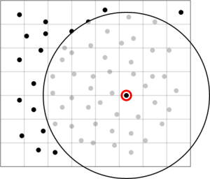
Это называется зоофильным спариванием, и оно может быть столь же вредным. Это особенно актуально, когда население не является одной группой геномов, но на самом деле содержит несколько подвид, каждый из которых поднимается на собственный небольшой фитнес-пик.
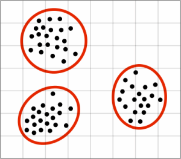
Вы определенно не хотите спариваться с членом другого подвид, так как потомство, скорее всего, приземлится где-то посередине. И так как эти два вида поднимаются на разные вершины, «посередине» фактически ставит вас в фитнес-долину.
Казалось бы, лучший вариант - сбалансировать разведение и разведение. Чтобы выбрать людей, которые не слишком близко и не слишком далеко. В Галапагосе вы можете указать коэффициент размножения (от -100% до + 100%, общий отбор по сравнению с полным размножением соответственно), что позволяет вам вести это относительное смещение:
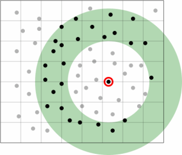
Обратите внимание, что выбор мата в настоящее время полностью игнорирует пригодность мат. Это то, что нужно искать в будущих выпусках, но даже без каких-либо продвинутых алгоритмов выбора решатель все еще работает.
Алгоритмы коалесценции
После выбора помощника необходимо создать потомство. На генетическом уровне это ничего, кроме забавы и игр. Биологический процесс рекомбинации генов ужасно сложный и сам подвержен эволюции (например, мейотический привод ). Цифровой вариант намного более прост. Это отчасти потому, что гены в эволюционных алгоритмах не очень похожи на биологические гены. Как ни странно, биологические гены гораздо более цифровые, чем программные гены. Как обнаружил Мендель в 1860-х годах, гены не являются постоянно переменными качествами. Вместо этого они ведут себя как переключатели. Гены в эволюционных решателях, таких как Галапагоги, ведут себя как числа с плавающей запятой, которые могут принимать все значения между двумя численными крайностями.
Когда мы соединяем два генома, нам нужно решить, какие значения назначать генам потомства. Опять же, Галапагос предоставляет несколько механизмов для достижения этого.
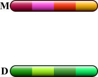
Представьте, что у нас есть два генома из четырех генов каждый. В решателе нет пола и нет основанных на полу характеристик, поэтому комбинация M и D потенциально является полностью симметричным процессом. Механизм, который является несколько синонимом биологической рекомбинации, представляет собой кроссоверный слияние .
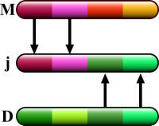
В кроссоверном спаривании младший наследует случайное число генов от мамы, а остальное - от папы. В этом механизме сохраняется значение гена.
Blend Coalescence будет вычислять новые значения для генов, основанных на обоих родителях, в основном усредняя значения:
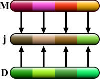
Также возможно добавить предпочтение смешивания, основанное на относительной пригодности. Если, к примеру, мама лучше, чем папа, ее значения генов будут более заметными у потомства:
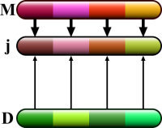
Мутационные заводы
Все механизмы, которые мы обсуждали до сих пор (Selection, Coupling and Coalescence), предназначены для улучшения качества решений на основе поколений за поколением. Однако все они имеют тенденцию к сокращению биологического разнообразия в популяции. Единственным механизмом, который может вводить разнообразие, является мутация. В ядре Galapagos имеется несколько типов мутаций, хотя характер реализации в Grasshopper на данный момент ограничивает возможную мутацию только точечными мутациями.
Прежде чем мы перейдем к мутациям, я хотел бы кратко поговорить о графах геномов. Популярный способ отображения многомерных точек на двумерном носителе состоит в том, чтобы нарисовать их как ряд строк, которые соединяют разные значения на множестве вертикальных баров. Каждый бар представляет собой одно измерение. Таким образом, мы можем легко отображать не только точки с любым количеством измерений, но даже точки с различным числом измерений на одном графике:
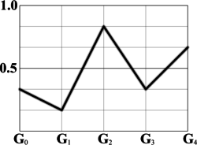
Здесь, например, мы имеем геном, состоящий из 5 генов. Таким образом, этот геном является точкой в 5-мерном пространстве, которое определяет этот конкретный вид. Когда G0 рисуется в точке ⅓, это означает, что значение составляет одну треть между минимальным и максимально допустимым пределами. Преимущество этого графика состоит в том, что становится довольно легко выявлять подвид в популяции, а также отдельные индивидуумы. Когда мы применяем мутации к геному, мы должны увидеть изменение в графике, так как каждый уникальный геном имеет уникальный граф.
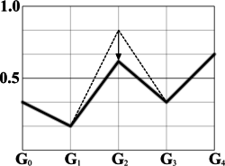
Вышеупомянутая модификация показывает мутацию точки , где изменяется одно значение гена. В настоящее время это единственный тип мутации, который возможен на Галапагосских островах. Мы могли бы также обменять два соседних значения гена, и в этом случае мы получим мутацию инверсии :
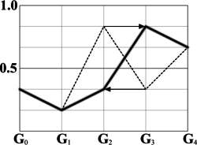
Мутации инверсии полезны только тогда, когда последующие гены имеют очень специфические отношения. Он имеет тенденцию к радикальному изменению генома и, следовательно, в большинстве случаев также радикально меняет физическую форму. Это почти всегда пагубная операция.
Два примера мутаций, которые нельзя использовать для вида, который требует определенного количества генов, являются мутациями дополнения и удаления .
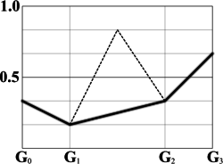
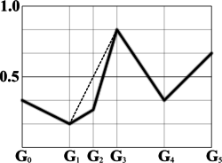
Вывод
Galapagos все еще очень молодой продукт и на самом деле не успел позиционировать себя в любом рабочем потоке, если это возможно. Похоже, что он способен довольно быстро решать относительно небольшие проблемы, но для этого требуется большая работа, чтобы сделать его более надежным и удобным. Вполне вероятно, что наиболее эффективными приложениями для решателя этого типа и возможностей являются небольшие или частичные проблемы. Попытка и развитие любого сложного почти наверняка приведет к разочарованию.